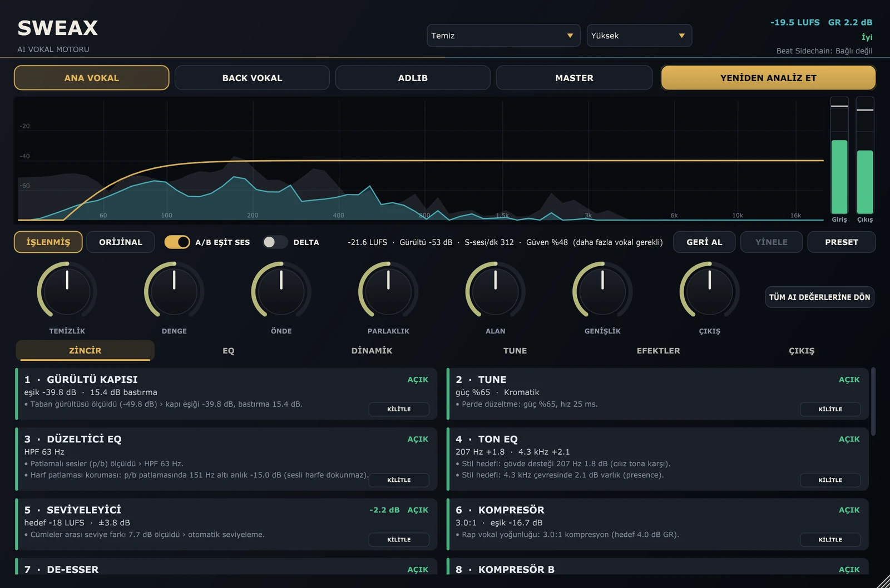
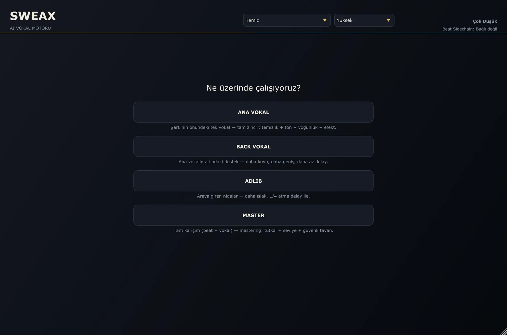
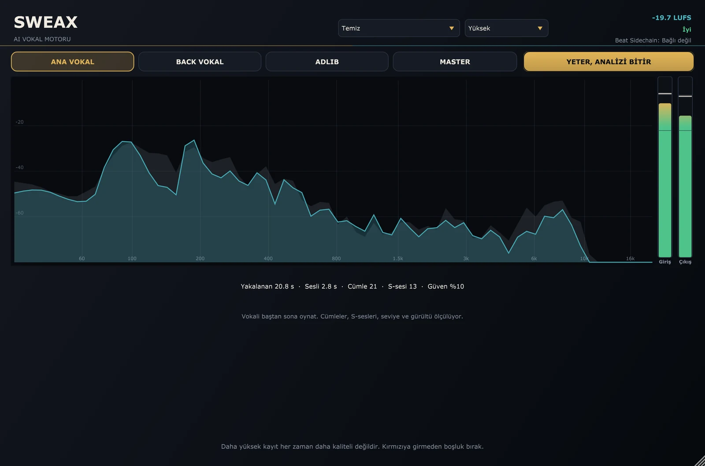
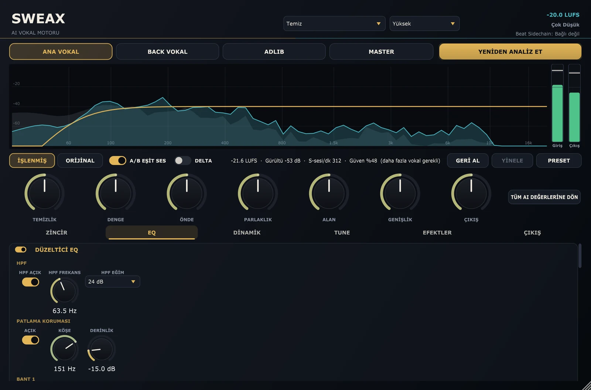

SweaxNext
Hears the take first, then fixes only what needs fixing.

The demo take, through every style
A synthetic voice reading our own lines, made worse on purpose: a boxy room, fan noise, mains hum, mic pops, harsh esses and lines recorded at different levels. Each version below came out of SweaxNext's own render tool. Nothing was touched by hand.
Styles
Artist styles
Artist styles describe the vocal sound on those artists' records. The artists have nothing to do with SweaxNext and have not endorsed it.
What it does
Put it on the vocal channel, press Analyse and play the verse. It listens, names what is wrong, builds a chain, checks the result offline and then hands you ordinary parameters you can automate, tweak and undo.
The screen
Everything below is the plug-in drawing itself: the editor is rendered off-screen from the real processor while the demo take plays through it.



16 styles, 16 chains
A style is a complete recipe: the order of the insert modules and where each one starts. The analysis still decides how hard each module works on your take.
| Style | Sound | Chain order after the EQ |
|---|
The artist-named styles are written descriptions of a vocal sound, turned into processing recipes. They are not the artists' own settings, and Killoki, Reçkol, Ati242, Uzi, Motive, Kava, Ezhel, Ceza, Allame, Şehinşah, Sagopa Kajmer and Ben Fero, their labels and engineers are not affiliated with SweaxNext and have not endorsed it.
How it decides
There is no neural network inside. SweaxNext measures, runs one detector per problem, plans with rules and the style recipe, and then checks its own plan by rendering the captured take and measuring it again.


Install
Windows 10 or 11, 64-bit, and any host that loads VST3. Made and tested in Studio One.
Latency and CPU
Latency depends only on the quality mode and is reported to the host, so your DAW lines the vocal up. Use Live while recording.